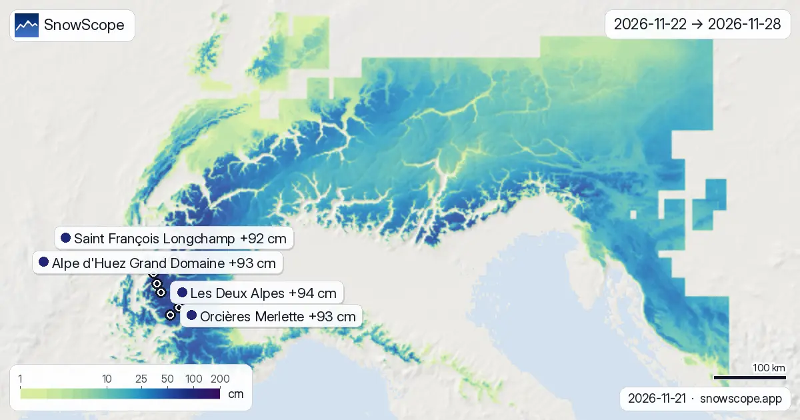

Alps snow outlook to 5 December: 94 cm at Les Deux Alpes, 93 cm at Alpe d'Huez Grand Domaine
New snow will bury the Alps unevenly over the next two weeks. The first seven days, from Sunday 22 November to Saturday 28 November, will deliver the bulk—most resorts get three-quarters of their fortnight's snow by then—while the second week quiets down.
See the live snow forecast for Les Deux Alpes in the SnowScope appSnow depth, powder alerts and the 3D map, free.
Which resorts, which totals
Les Deux Alpes leads with roughly 94 cm of new snow forecast across 14 days on its upper slopes (the spread the two forecasts is 61 to 127 cm). Alpe d'Huez Grand Domaine follows closely: about 93 cm. Both resorts sit above 1,600 m, where the air holds less moisture; yet both catch a lot because they face the storms head-on.
Orcières Merlette, Saint François Longchamp, Les 7 Laux and Puy-Saint-Vincent all lie in the 87–93 cm band. Orcières Merlette's range is widest—53 to 134 cm—meaning the two forecasts disagree more there.
Every resort on this list gets at least four days with 5 cm or more of new snow. That is enough to cover rocks and reshape the ski surface several times over.
| Resort | Snow depth | New snow, 72 h | Coming, next days | Top |
|---|---|---|---|---|
| Les Deux Alpes | 102 cm | 64 cm | 72 cm | 3,511 m |
| Alpe d'Huez Grand Domaine | 92 cm | 84 cm | 89 cm | 3,306 m |
| Orcières Merlette | 50 cm | 44 cm | 48 cm | 2,731 m |
| Saint François Longchamp | 59 cm | 93 cm | 89 cm | 2,516 m |
| Les 7 Laux | 35 cm | 62 cm | 64 cm | 2,372 m |
| Puy-Saint-Vincent | 36 cm | 39 cm | 46 cm | 2,664 m |

Sunday 22 November: the hammer blow
One day will dominate. On Sunday 22 November, 813 of the 1,186 Alps resorts tracked will see 5 cm or more. Saint François Longchamp reaches 52 cm that day alone—more than half the depth needed to cover thin early-season snow. Les Deux Alpes and Alpe d'Huez Grand Domaine each get 47–49 cm. Even the smaller resorts in this group—Les 7 Laux, Orcières Merlette, Puy-Saint-Vincent—receive 34–46 cm.
Three other days matter: Monday 23 November (549 resorts at 5 cm or more), Wednesday 25 November (372 resorts), and Thursday 26 November (371 resorts). Together, these four days carry most of the week-one snow. After that, the pace drops sharply.

How the two weeks split
Across the whole Alps region, 73% of the two-week total falls in week one (22–28 November). Week two (29 November to 5 December) adds the remainder, mostly as sporadic showers rather than a fresh dump. Les Deux Alpes and Alpe d'Huez Grand Domaine exemplify this split: 76–80 cm in week one, then only 13–18 cm in week two.
Only Puy-Saint-Vincent and Orcières Merlette show a higher week-two share—25 and 28 cm respectively—because they sit lower and catch more of the second week's weaker systems. If you plan to ski in early December, the base from week one will still be fresh, but do not expect the same daily powder.

Snow by height: where it accumulates most
Height matters. Between 1,000 and 1,500 m, the forecast is typically 22 cm, with the snowiest areas reaching 32 cm. Jump to 1,500–2,000 m and you get 32 cm typical, 46 cm in the best areas. Between 2,000 and 2,500 m the numbers climb further: 34 cm typical, 52 cm in heavy pockets.
Above 2,500 m the increase slows. At 2,500–3,000 m you see 37 cm typical and 52 cm at the top; above 3,000 m, about 43 cm typical with 54 cm in the snowiest quarter. The sweet spot for base-building is therefore the 1,500–2,500 m band, where the air is cold enough for consistent snow but not so high that storms leave less behind.
How this compares to November normal
At Les Deux Alpes, the upper slopes hold 102 cm today (21 November). The long-term average for this date is 28 cm. So the base is already about 3.6 times deeper than usual—a gift from earlier storms.
In only one winter out of ten does this spot reach 70 cm by late November. The 94 cm coming over the next 14 days will push the depth well above what most skiers experience. A week ago, 4 cm lay on the same slope. The jump ahead is dramatic.
Reading the maps and what changes
Three maps show the picture: the full two weeks in one, then week one and week two separately. Grey terrain means less than 1 cm. Darker blues and purples mean heavier snow. Resort pins sit on the actual slope heights, not in the village, so a pin that straddles two colours is best read by clicking it.
These forecasts can shift. The two forecasts currently agree on the broad pattern—a wet, active first week—but diverge on week-two timing. We update every morning, so check back as 22 November nears. A warm front or a sudden jet-stream wobble could soften the dump or push rain higher. The 0 °C level will move; check the map again the day before you travel.
Tips for skiers
- Aim for Sunday 22 November or the following week. Sunday is the peak day across nearly all resorts; Monday 23 November still carries heavy snow. If you cannot make those dates, Wednesday 25 November offers a second chance before week one ends.
- Resorts above 2,000 m will hold the snow longer and stay skiable into the second week. Lower resorts risk rain mixing in after the 22–23 November burst, especially if the 0 °C line climbs mid-week.
- Before any off-piste or touring, check the official avalanche bulletin for your region. Fourteen days of new snow on a thin early-season base can trigger slides.
- Snow on the forecast map does not mean the resort is open yet. Confirm lift status and opening dates on each resort's website before you book travel.
- Pack for cold: this snow is arriving on a frozen landscape, so the base will be firm and edges will bite. Expect fast skiing on packed snow by mid-week as the dump settles.
About these numbers
Resort snow depths are the deepest snow on the resort's upper slopes on the date shown; they are estimates for an area, not a measurement at one point. Forecasts can change. Always read the official avalanche bulletin before going off-piste.
Official avalanche bulletins: EAWS (Alps)
Cite this report
For research, teaching or the press: the numbers and charts are free to reuse under CC BY 4.0 with this citation.
SnowScope (2026), Alps snow outlook to 5 December: 94 cm at Les Deux Alpes, 93 cm at Alpe d'Huez Grand Domaine, https://snowscope.app/blog/en/2026/11/alps-2-week-snow-forecast-maps-21-november-2026.html, accessed 2026-11-21
SnowScope (Atlas Labs). (2026, November 21). Alps snow outlook to 5 December: 94 cm at Les Deux Alpes, 93 cm at Alpe d'Huez Grand Domaine. SnowScope snow reports. https://snowscope.app/blog/en/2026/11/alps-2-week-snow-forecast-maps-21-november-2026.html
BibTeX
@misc{snowscope2026alps2weeksnowforecastmap,
author = {{SnowScope (Atlas Labs)}},
title = {Alps snow outlook to 5 December: 94 cm at Les Deux Alpes, 93 cm at Alpe d'Huez Grand Domaine},
year = {2026},
month = nov,
howpublished = {\url{https://snowscope.app/blog/en/2026/11/alps-2-week-snow-forecast-maps-21-november-2026.html}},
note = {Published 2026-11-21 12:14 UTC; accessed 2026-11-21}
}· CC BY 4.0 · Methods, data and tools →
Les Deux Alpes: snow and temperature by height, this winter vs last (tools) →
Follow Les Deux Alpes
Free: a message when fresh snow is coming, and the forecast every morning.
More snow reports

Puy-Saint-Vincent pairs a 44 EUR adult 1-day pass with solid December snow higher up, compared here with its big neighbour Serre Chevalier.

Orcières Merlette offers a high base at 1826 m and a 6-day pass from 227 EUR, making it a reliable choice for a December ski trip.

Les 2 Alpes reaches 3511 m for high snow in December 2026, with an adult 6-day pass priced at 266.50 EUR.